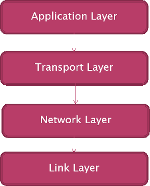

Protocols
Objectives
- Define the term network protocol
- Explain the purpose and use of common network protocols including:
- Ethernet
- Wi-Fi
- TCP (Transmission Control Protocol)
- UDP (User Datagram Protocol)
- IP (Internet Protocol)
- HTTP (Hypertext Transfer Protocol)
- HTTPS (Hypertext Transfer Protocol Secure)
- FTP (File Transfer Protocol)
- SMTP (Simple Mail Transfer Protocol)
- IMAP (Internet Message Access Protocol)
- Describe the 4 layer TCP/IP model
- Understand that the HTTP, HTTPS, SMTP, IMAP and FTP protocols operate at the application layer
- Understand that the TCP and UDP protocols operate at the transport layer
- Understand that the IP protocol operates at the internet layer
A protocol, in the context of computer science and networking, is a set of rules and conventions that govern how data is transmitted and received between devices or systems. These rules define the format, sequencing, error checking, and communication behavior that devices must follow to exchange information successfully. Protocols are essential for ensuring standardized and efficient communication in various computing environments.
There are various types of protocols, each serving specific purposes. Some common examples include:
- Communication Protocols: e.g. Transmission Control Protocol (TCP): A connection-oriented protocol that provides reliable, ordered, and error-checked delivery of data over a network and User Datagram Protocol (UDP): A connectionless protocol that delivers data without guarantees regarding reliability or order.
- Internet Protocols: e.g. Internet Protocol (IP): The fundamental protocol that provides the addressing and routing mechanisms for data transmission across networks.
- Application Layer Protocols: e.g. Hypertext Transfer Protocol (HTTP): Used for transferring hypertext documents on the World Wide Web; File Transfer Protocol (FTP): Facilitates the transfer of files between computers on a network; Simple Mail Transfer Protocol (SMTP): Manages the sending of emails.
- Network Security Protocols: e.g. Secure Socket Layer (SSL) and its successor Transport Layer Security (TLS): to provide secure communication over a computer network.
- Data Link Layer Protocols: e.g. Ethernet: A widely used protocol for local area networks (LANs).
Protocols enable connections between different hardware and software systems by ensuring that devices adhere to the same rules when communicating. They play a crucial role in the functioning of the internet and computer networks, allowing devices from different manufacturers to communicate effectively.
TCP/IP
The Transmission Control Protocol/Internet Protocol is the set of rules ensuring communication for devices on the Internet. It determines how data should be packaged, transmitted and received as well as how the data makes its way to its destination. The term protocol means, variously, a code of conduct or the etiquette observed by foreign diplomats and in these senses a protocol sets out the way things are to be done and how the business of communication should be carried out. It's like the following figure:

The two diplomats are communicating but only virtually. They're handing over information to their interpreters who then use a physical medium to communicate. There are three layers here but the only real communication is between the diplomat and their interpreter.
So, with networking protocols, though there may be more layers, there's a way the transaction should be carried out. As long as all devices on the network conform to these protocols safe and effective communication can take place.
TCP/IP was designed in the 1970s by Vint Cerf and Bob Kahn, the so-called fathers of the Internet. They set out a number of goals for the protocol:
- Network connectivity: any network can connect to any other network via a gateway or router
- Distribution: there would be no central network administration or control
- Error recovery: lost packets of data would be retransmitted
Today practically all consumer-targeted operating systems include TCP/IP as standard.
Note
TCP/IP is a classic example of computational thinking in that the problem of implementing transfer of data between networks is decomposed into other smaller problems (the layers) and the complexities of the underlying network are hidden from the applications using them (a form of abstraction).
TCP/IP is not one protocol but many, it is a protocol suite of which TCP and IP were the first to be developed hence the name. New protocols were added to the suite over time as demand and technology changed.
The layers of TCP/IP
Fundamentally, TCP/IP is a conceptually layered protocol, originally specifying four layers:
- Application layer
- Transport layer
- Network layer (or Internet layer)
- Link layer (or Network Access/Interface layer)
Latterly the Link layer has been split into two, Data Link and Physical, due to the growth of alternative physical connection media but the AQA syllabus refers to the four as in the following figure:

TCP/IP is implemented in separate software modules where each has a different responsibility. Applications will communicate with the protocol stack via an Application Programming Interface (API), the Socket API. (NB. A socket is the IP address and port combined e.g. 212.53.71.20:80).
It is useful to conceptually organise the four layers into two groups:
- The top two are concerned with the application and processes
- The lower two with the transfer of data on the network itself
Logically each layer talks to the corresponding layer on the other side:

Application layer
At this layer the applications being used i.e. web browser, email client etc connect to the protocol stack. This layer defines how the application will use the network. Sitting in the application layer are a number of application protocols. For example, DNS, Hypertext Transfer Protocol (HTTP), Secure Shell (SSH), File Transfer Protocol (FTP), Simple Mail TRansfer Protocol (SMTP) etc..
The application layer defines how the user application processes, (i.e. programs running on the computers, the clients and the servers), pass messages to each other. Each of these protocols will define:
- type of message e.g. requests, responses
- syntax of the message e.g. fields in the message and how separated
- semantics of the fields i.e. what do the fields mean
- rules for determining when and how a process sends a message and how/when to respond
Just a few of these protocols that exist in this layer are:
| Application Type | Application-layer protocol | Transport Protocol |
|---|---|---|
| Electronic Mail | Send: Simple Mail Transfer Protocol SMTP (RFC821) | TCP 25 |
| Receive: Post Office Protocol v3 POP3 (RFC1939) | TCP 110 | |
| World Wide Web | Hypertext Transfer Protocol 1.1 HTTP (RFC2068) | TCP 80 |
| File Transfer | File Transfer Protocol FTP (RFC959) | TCP 21 |
| Remote File Server | Network File System NFS | UDP or TCP |
| etc .. |
We'll look in more detail at some of these later.
Transport layer
TCP lives at the transport layer, along with another protocol UDP.
When the application layer gets the data it communicates to the transport layer through the assigned port (see table above). Each port is assigned to a different protocol in the transport layer so that TCP knows where the data is coming from e.g. web browser data will go through port 80.
The transport layer will divide the data into small chunks (packets) and adds a header to the message containing the port. The client request will have, say, port 7268, as the source and 80 for the destination (for an HTTP request). When the server responds the source port will be 80 and the destination 7268. This use of ports allows multiple sessions to take place at once i.e. multiple tabs in the browser.
The transport layer will also add sequencing information, enabling the destination to sort them into the correct order on arrival before passing the message on to the network layer.
Note
This layer is called the transport layer - it adds the port information.
Transport Layer Protocols
There are two main protocols used here:
- Transmission Control Protocol (TCP) - a connection-oriented service where the sender's TCP divides the message into chunks adding a sequence number. The receiver will reorder the chunks and send an acknowledgment for safe receipt. TCP will also manage flow control.
- User Datagram Protocol (UDP) - a simple unreliable, connectionless, unacknowledged service for applications not requiring sequencing, error or flow control. Used for connections where speed of delivery is important.
Network, or Internet, layer
The Internet layer is responsible for transferring the data between source and destination computers, accepting data from the transport layer then passing on to the link layer. Its main functions are:
- transmit data to the link layer
- routing the data
Irrespective of the application layer protocol (HTTP, FTP etc) and the transport layer protocol being used it has to pass through the Internet protocol as the only protocol used for routing data packets through the network.
The protocols in this layer include:
- Internet Protocol (IP)
- Internet Control Message Protocol (ICMP)
- Address Resolution Protocol (ARP) and Reverse Address Protocol (RARP)
It is at this layer when the source and destination IP addresses are added to the packet.
Link layer
Finally, the link layer handles MAC addressing and converting the data into electrical signals for transmission. This layer handles the physical details of interfacing with the connection media. MAC addresses, added to the header of the data, now called a frame.
The MAC address physically identifies, with a unique address, the actual device and are written as six groups of two hexadecimal digits separate by colons.
If two hosts are in same network then delivery is simple. If devices are in different networks a router is needed when the destination address will be the MAC address of the router itself which will get rewritten as it passes from router to router
Protocols used at this layer will be dependent on the connection media being used e.g. Ethernet, Wireless.
Standard application layer protocols
As we now dig into how some of the application layer protocols work the principles outlined above should not be forgotten. Ultimately each will be making a request of a server to return data to the client, the request is organised into a packet, transferred to a number of routers and on arrival the request is dealt with and the data returned back to the client. The port used by the application is essential in determining how the packet is processed on arrival triggering the specific protocol to be used.
File Transfer Protocol (FTP)
As the name suggests FTP is used for transferring files. Two ports are used, port 20 for FTP commands and port 21 for the file data though the initial connection will be to port 21.
The client sends the request to create a TCP connection from a random (unprivileged) port to the server listening on port 21. The server will respond with a control code e.g. "200 OK" indicating success. Once established a number of commands can be used to browse directories (ls to list directories, cd to change directory, get to download or put to upload files etc..
FTP does not encrypt usernames or passwords, or its data and thus can be intercepted. This is common for many of the application level protocols developed before TLS or SSL therefore it's advised to used secure versions of the protocol (FTPS) or better still connect to the remote server via SSH.
Most modern web browsers will include FTP functionality.
Hypertext Transfer Protocol (HTTP)
HTTP, using port 80, is the foundation for data communication and transfer using the World Wide Web. Again the client will send a request to a server, port 80 for HTTP web servers, and the server will respond to that request. The final data may be in a number of forms but most commonly as HTML, though other data may be transferred including image and audio files etc..
The web browser will:
- extract the FQDN from the URL entered by the user and perform a DNS lookup request to get the IP address
- send a
GETrequest to the server for the requested resource - the server will send the resource to the client
- the browser renders the file using any accompanying style and structure information (e.g. CSS)
- if the requested resource contains other references e.g. to image files then additional GET requests will be made
Other types of request are available e.g. POST where a user is sending data e.g. website login information, HEAD to get such the header (metadata) from the resource without the body.
HTTP is not encrypted, thus HTTPS is recommended.
Hypertext Transfer Protocol Secure (HTTPS)
HTTPS uses port 443 and encrypts data using either Transport Layer Security (TLS) or Secure Sockets Layer (SSL). It serves to authenticate the website being access, using digital certificates, and encryption of the data being transferred.
Post Office Protocol (POP3) and Simple Mail Transfer Protocol (SMTP)
Bundled together these protocols deal with email communication and transfer.
SMTP is used to send email messages. Recipients of messages are specified then transferred to the email server listening on port 25. To access an email the client needs to use POP3 which uses port 110. The message is held by the server until the client requests it to be downloaded to their computer. NB. There are alternative protocols that can be used, and are probably preferable including Internet Message Access Protocol (IMAP) which allows users to view and manipulate email messages on the server as though they were on the client's own computer.
Email messages are sent without encryption but each of the protocols permit using SSL or TLS where different ports will be used.
Dynamic Host Configuration Protocol (DHCP)
The Dynamic Host Control Protocol (DHCP) is a network management protocol where a DHCP server can automatically allocate IP addresses to hosts on its network. Without DHCP the network administrator would need to manually set the IP address of each device on their network (a static IP address). Most domestic routers will also act as a DHCP server though addresses can be statically assigned as well and ISPs will also auto-allocate IP addresses from a known pool of available addresses leased to them for their customers.
The DHCP server makes it much easier to add devices to a network. It's not just the IP address that needs to be assigned. Any device joining the network also needs to be assigned the subnet mask, the address of a DNS Server and the default gateway (the first-hop router). Also, no two devices on the same network can have the same IP address so they'll need to ensure they do not duplicate. The DHCP server removes all these issues.
Client server model
Throughout this unit the terms client and server have been used a great deal, it's one of the principles behind the working of the Internet. The server application listens for requests from clients which make requests to the server for the resources it is providing. For example, the client is a user running a web browser application who makes request to a remote web server for a particular page or resource using the URL. The web server receives the request and responds by returning the requested resource to the client, or it may reject the request and inform the client of the reason.

Typically, servers will be identified by the type of service they provide e.g. Web server serving web pages, Email servers serving email messages, DHCP server providing a DHCP service etc.. The server will be running all the time and can respond to requests from multiple clients at the same time.
It's a good example of abstraction in that the client does not need to know how the server is performing its task, it only needs to know the format of the response so it can process it appropriately. The server and the client are separate independent programs. Each can be developed independently of the other, code on the client side can be changed without affecting the operation of the server and vice versa. So, one can change the user interface and/or internal processing of the data but when it comes to needing to pass messages between the client and the server though they need to ensure the messages are in the form both can recognise.